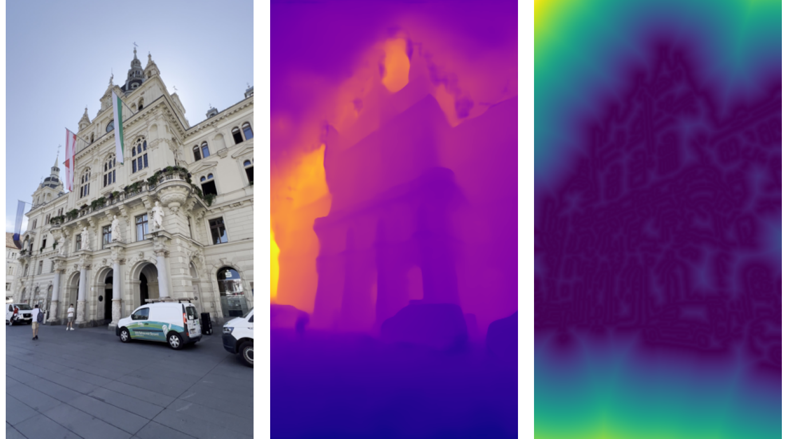
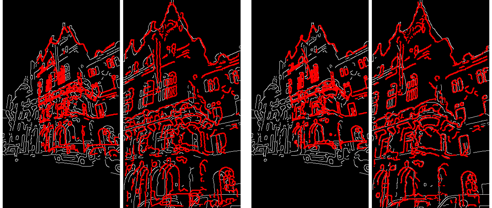
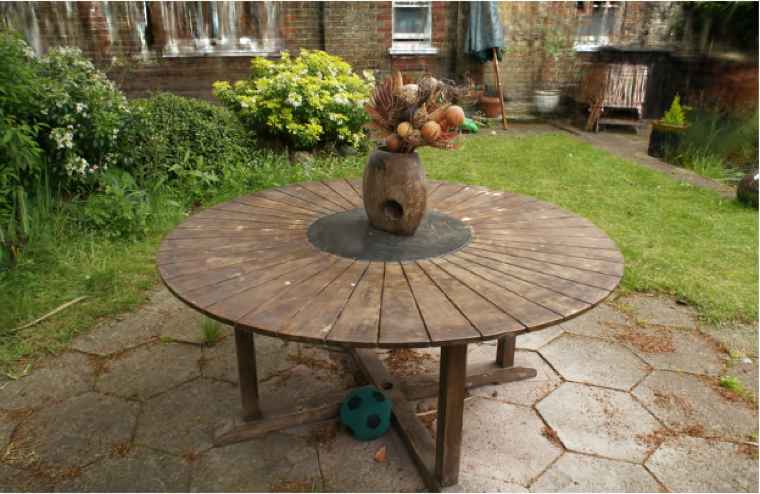
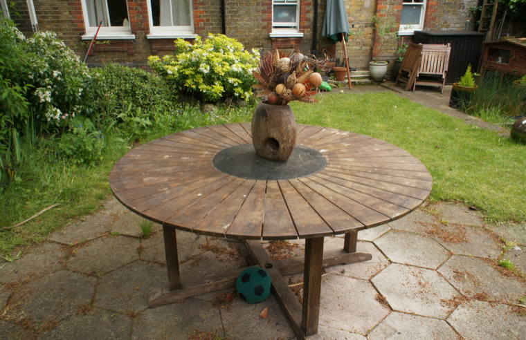
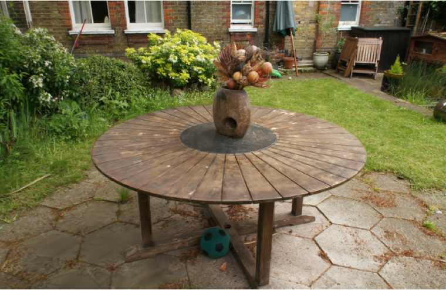
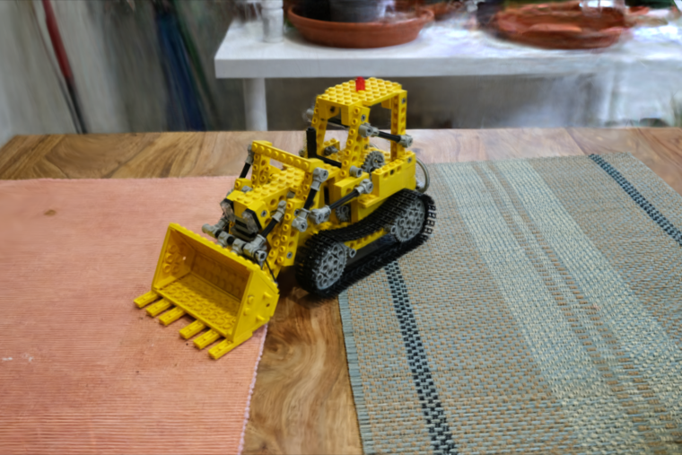
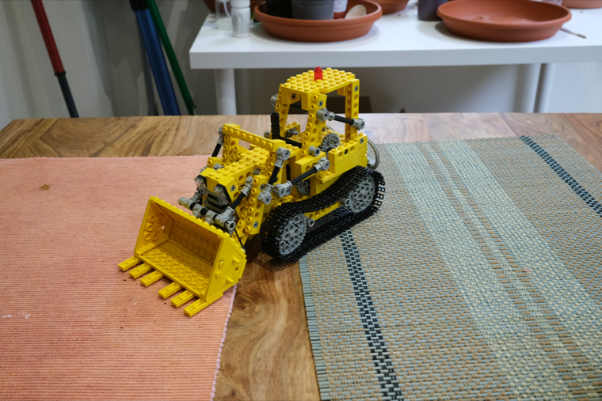
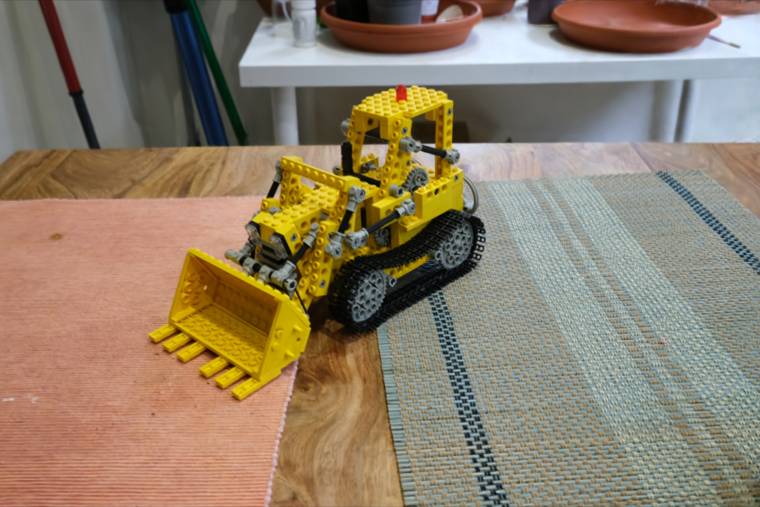

Abstract
We introduce Edge-based Pose Optimization (EPO), a trackless geometric optimization framework specifically designed to boost the Structure-from-Motion reconstructions generated by 3D Foundation Models. These models achieve rapid inference by bypassing the time-consuming feature extraction and matching stages of traditional pipelines, where explicit correspondences between each 3D point and multiple images, referred to as tracks, are established. However, their geometric accuracy currently falls short of traditional pipelines. While this can be addressed in a post-processing step via Bundle Adjustment-like refinement, doing so requires extracting feature tracks, thus defeating the original speed advantage. Instead, our framework uses edge map alignment as a proxy for geometric optimization, avoiding feature extraction and track construction entirely. Through extensive evaluation across multiple datasets and tasks, we demonstrate that EPO matches or outperforms Bundle Adjustment-like methods while requiring significantly lower runtime and memory. Notably, its reduced memory footprint makes EPO suitable for consumer-grade hardware, where competing refinement methods cannot run.
Contributions
- We propose a robust and trackless optimization framework that boosts the geometric accuracy of 3D Foundation Models through neural pose refinement and first-order optimization.
- We introduce an edge-based reprojection loss and a pose-based early-stopping criterion that together reduce runtime to a few seconds, compared to the minutes needed by Bundle Adjustment-based refinement methods, while requiring lower memory.
- We provide a comprehensive evaluation across diverse 3D Foundation Models, benchmarks, and real-world scenarios — including TerraSky3D, ScanNet++, and Mip-NeRF 360 — demonstrating that EPO consistently performs on par with, or superior to, state-of-the-art refinement methods.
How It Works
Given the initial geometry from a 3D Foundation Model, EPO computes for each image a Canny edge map and its Distance Transform Field (DTF), where every pixel encodes the distance to the nearest edge. Rather than matching features, EPO minimizes a bidirectional edge reprojection loss: edges from one view are reprojected into another and scored against the DTF. We learn, per scene, a pose MLP, a focal scaling, and a pixel-wise affine depth correction, all updated by a first-order optimizer until a pose-based stopping criterion is met.


Pose Accuracy & Runtime
Using VGGT as a representative 3D Foundation Model, we compare against VGGT+BA and VGGT+Ref+BA which tracks are predicted by a CoTracker module. +Ref indicates further track refinement step. EPO improves pose accuracy (AUC@5°) on every benchmark while drastically cutting end-to-end runtime — and, unlike +Ref+BA (which needs ≥40 GB of VRAM), it runs on a consumer-grade RTX 4090.
AUC@5° ↑
Runtime (s) ↓
AUC@5° (higher is better) and total end-to-end wall-clock time in seconds (lower is better), averaged per dataset. † run on an NVIDIA H200 due to its higher memory requirements; all other methods run on an RTX 4090.
Generalization Across 3D Foundation Models
Beyond RGB images for edge extraction, EPO needs only what any 3D Foundation Model already outputs — camera intrinsics, poses, and depth maps — so it drops in on top of different backbones unchanged. Applied to VGGT, MapAnything, and π3X, EPO consistently boosts pose accuracy across every dataset.
VGGT
MapAnything
π³X
AUC@5° (higher is better) for three 3D Foundation Models, shown as raw output and after EPO refinement. EPO improves geometric accuracy across all models and datasets.
Novel View Synthesis
As a downstream proxy for reconstruction quality, we train a 3DGS model for 30,000 steps on each SfM reconstruction. On Mip-NeRF 360, VGGT+EPO yields the best PSNR, SSIM, and LPIPS among the optimization methods, preserving sharper structural detail than BA-based refinement.
VGGT+Ref+BA vs GT
VGGT+EPO (Ours) vs GT
Garden



Flowers
Kitchen



| Method | PSNR↑ | SSIM↑ | LPIPS↓ |
|---|---|---|---|
| GT (reference) | 26.69 | 0.831 | 0.209 |
| VGGT | 20.56 | 0.555 | 0.422 |
| VGGT+BA | 22.70 | 0.661 | 0.339 |
| VGGT+Ref+BA | 23.06 | 0.688 | 0.320 |
| VGGT+EPO (Ours) | 23.93 | 0.721 | 0.284 |
Mean Novel View Synthesis quality on Mip-NeRF 360 (3DGS, 30k steps).
BibTeX
@inproceedings{durso2026epo,
title={Boosting 3D Foundation Models with Edge-based Pose Optimization},
author={D'Urso, Mattia and Sormann, Christian and Rossi, Mattia and Fraundorfer, Friedrich},
booktitle={European Conference on Computer Vision (ECCV)},
year={2026}
}